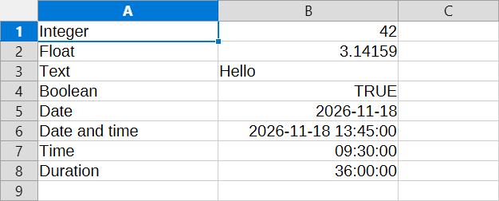
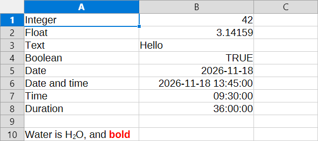

Values and types
An OpenDocument cell stores its value with a type. OpenDocumentSpreadsheets reads it as follows:
| Cell | Julia value |
|---|---|
| number, percentage, currency | Int64 if the value is whole and its number format shows no decimals, else Float64 |
| date | Date, or DateTime if it has a time or its format shows one |
| time (a duration) | Dates.Time from 0 to under 24 hours; otherwise a Dates.CompoundPeriod such as 1 day, 12 hours |
| boolean | Bool |
| text | String (several paragraphs are joined with "\n") |
| empty, empty text, error | missing |
Percentages are read as their value (50% reads as 0.5). The currency of a currency cell is in its Cell (getcell(sheet, "B2").currency).
Writing values
Writing takes numbers, strings, Bool, Date, DateTime, Time, periods (durations), and missing or nothing (an empty cell). Whole numbers keep their type (7 reads back as 7, 7.0 as 7.0), and floats are written exactly.
using Dates
xf = newods("Types")
types = xf["Types"]
types["A1:A8"] = ["Integer", "Float", "Text", "Boolean", "Date", "Date and time", "Time", "Duration"]
types["B1"] = 42
types["B2"] = 3.14159
types["B3"] = "Hello"
types["B4"] = true
types["B5"] = Date(2026, 11, 18)
types["B6"] = DateTime(2026, 11, 18, 13, 45)
types["B7"] = Time(9, 30)
types["B8"] = Hour(36)
setColumnWidth(types, "A:B"; width = 18)
Dates, times and booleans need a number format, or LibreOffice treats them as plain numbers the next time it saves. OpenDocumentSpreadsheets gives them ISO formats (2026-11-18, 2026-11-18 13:45:00, [HH]:MM:SS, TRUE). A cell whose existing format fits the new value keeps it.
Errors
A formula whose result is an error reads as missing. iserror and geterror tell the two apart, with the text LibreOffice shows. A formula written by OpenDocumentSpreadsheets has no result until LibreOffice calculates it, so take a file LibreOffice has saved, whose sheet sh has =1/0 in C2:
iserror(sh, "C2") # true
geterror(sh, "C2") # "#DIV/0!", or a code such as "Err:502"Cells
getcell gives the whole cell: its value type, value, formula, style name, currency, error text and merge spans. It is public but not exported, so import it by name:
using OpenDocumentSpreadsheets: getcell
c = getcell(types, "B2") # 3.14159, on the Types sheet above
c.datatype # :float, :percentage, :currency, :date, :time, :boolean, :string, :error, :empty
c.value
c.style # the name of its cell styleWhere a sheet holds nothing, getcell returns an EmptyCell.
Rich text
A text cell can hold runs of differently formatted text, as LibreOffice makes when part of a cell's text is selected and formatted:
using OpenDocumentSpreadsheets: getRichTextString
rt = RichTextString(RichTextRun("Water is H"), RichTextRun("2", [:vertAlign => "subscript"]),
RichTextRun("O, and "), RichTextRun("bold", [:bold => true, :color => "red"]))
types["A10"] = rt
getRichTextString(types, "A10") == rt # true
types["A10"] # "Water is H2O, and bold", its text
A run's attributes are :bold, :italic, :under, :strike, :vertAlign ("superscript" or "subscript"), :color, :size and :name. A run takes the attributes it doesn't set from the cell, and a line break starts a new paragraph.
Rich text in a single format is saved as ordinary text, its format becoming the cell's font, except for a superscript or subscript, which a cell's font can't hold. getRichTextString reads rich text made in LibreOffice too, and gives nothing for a cell with no formatted runs. Writing a new value to the cell drops its runs, as LibreOffice does.